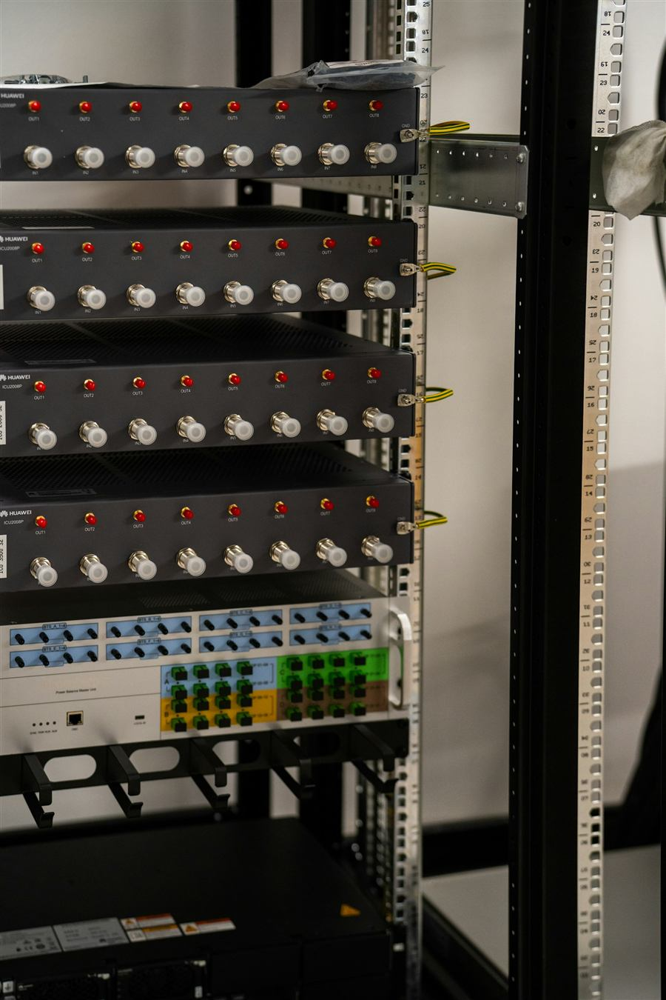
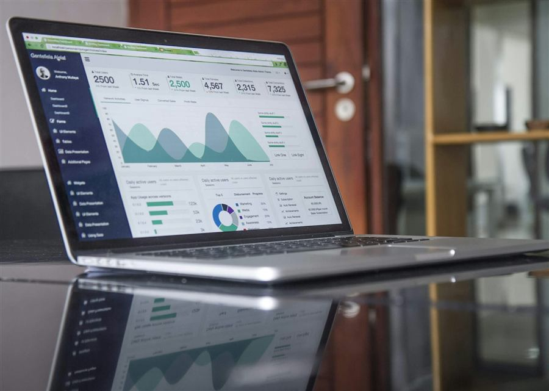
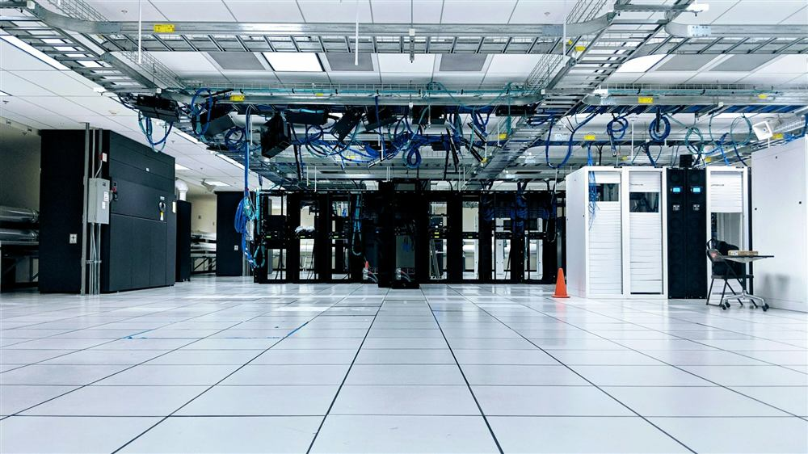
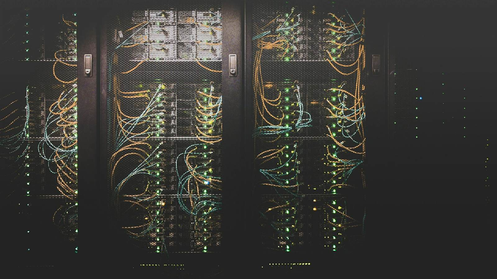

Ambiental Efecto incierto
ConstaHay un registro aproximado del consumo propio, pero el caso no da cifras.
FaltaDatos comparables del consumo del servicio cloud.
No podemos asegurar que la nube gaste menos.
Caso 2 · Análisis de sostenibilidad
NubeGest quiere llevar sus aplicaciones de sus propios servidores a un proveedor cloud. Así sería más fácil mantenerlas y crecer. Pero ¿podemos decir que también es mejor para el planeta?
Integrantes
Análisis ASG
Separamos lo que dice el caso de lo que solo es un riesgo.
ConstaHay un registro aproximado del consumo propio, pero el caso no da cifras.
FaltaDatos comparables del consumo del servicio cloud.
No podemos asegurar que la nube gaste menos.
ConstaEl proveedor informa de precio y disponibilidad.
FaltaDe dónde sale su energía y cómo comprobar su impacto.
Sin pruebas, no se puede justificar.
ConstaLos clientes dependen de las aplicaciones para facturar y gestionar su día a día.
RiesgoUna migración mal planificada podría cortar el servicio. No ha pasado: hay que evitarlo.
Stakeholders
La dirección decide, el equipo técnico ejecuta… y los clientes notan el resultado.
Dependen del servicio
Usan las aplicaciones para facturar y gestionar su trabajo diario. Les afecta cualquier corte durante el cambio.

Hace la migración
Tendrá que cambiar sus procedimientos y asumir el trabajo del traslado. Más carga y nuevas formas de trabajar.

Decide y responde
Valora el coste, la continuidad del servicio y las pruebas que justifican el cambio. Necesita datos, no promesas.

Propuesta de mejora · ODS
Pasamos primero una parte controlada de las aplicaciones y la comparamos con el sistema actual.
La dirección encarga y decide; el equipo técnico planifica y ejecuta la prueba.
El consumo energético de nuestro servicio, cómo lo calcula (de forma verificable) y de dónde sale su energía.
Los servidores propios siguen funcionando en paralelo, con plan de vuelta atrás y aviso previo.
Datos comparables, origen de la energía acreditado y ningún corte del servicio durante la prueba.

Indicador
Consumo eléctrico atribuible al servicio de las aplicaciones
¿cuántos? aún no lo sabemos
Ya existe
Fuente: el registro aproximado de consumo de la empresa (servidores y refrigeración de la sala).
Es aproximado y el caso no da cifras: hay que precisarlo.
Falta
Fuente: el proveedor, con el consumo de nuestras aplicaciones y una metodología verificable.
Hoy no hay datos comparables.
Financiación y decisión
Decisión provisionalAún no decimos que la nube sea más sostenible. Seguimos con la comparación y la prueba.
Para confirmarDatos comparables, origen de la energía y continuidad garantizada.Sin las tres, no hay migración completa.